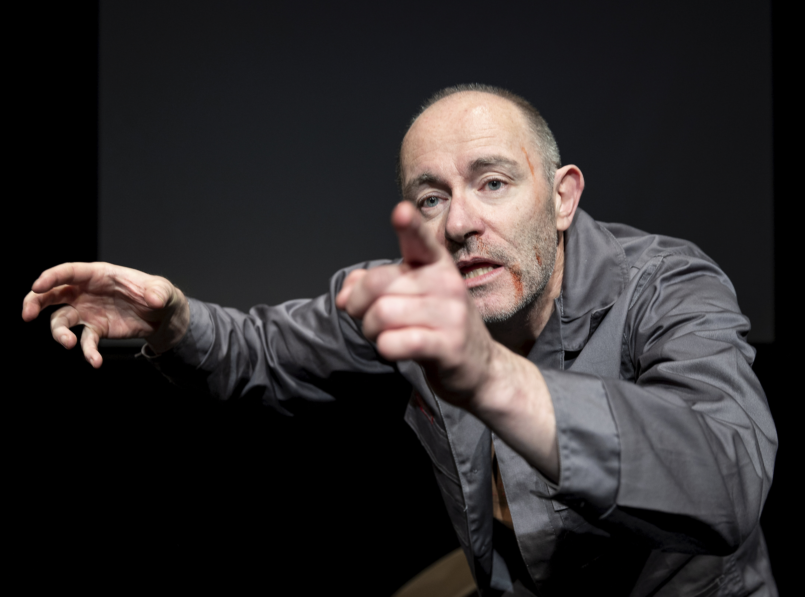

- 


Some informations
From November 2024 to April 2025, Born Productions undertook the task of bringing George Orwell’s dystopian classic to the stage in Teatr Korez. Thirty performances later, nearly 4000 Silesian people are in agreement; the show is a hit.
from the novel by Irishman Peadar
de Búrca, this one-man performance in English
is 70 minutes in duration and has thrilled
audiences of adults and students alike.
“Peadar de Burca performs a vivisection of a
totalitarian system that aims to take away the
freedom of every individual. The actor does it
precisely, methodically, meticulously.” – Marta
Odziomek, Gazeta Wyborcza
De Búrca’s vision is neither shock no satire, but
a story stripped down to the humanity of “Winston”,
a man who defies the system by yearning for love,
companionship and sex. The themes of language,
manipulation and the role of technology as a means
of monitoring citizens by the government are present,
but above all, 1984 is about resistance and rebellion,
something the people of Poland know a thing or two about.
“The hour-long performance passes like one moment,
it is impossible to take your eyes off the actor,
who uses all his dramatic potential to create a world
on the stage "as a warning". A world immersed in greyness,
without smiles and hope, suspicious and violent.”
– Katowice Wyborcza
Od listopada 2024 do kwietnia 2025 roku BORN Productions podjęło się zadania przeniesienia dystopijnej klasyki George’a Orwella na scenę Teatru Korez. Po trzydziestu przedstawieniach prawie 4000 mieszkańców Śląska jest zgodnych – to spektakl, który odniósł sukces.
Adaptowany z powieści przez Irlandczyka Peadara de Búrcę, ten jednoosobowy spektakl w języku angielskim trwa 70 minut i zachwycił zarówno dorosłych, jak i młodzież szkolną.
„Peadar de Búrca dokonuje wiwisekcji systemu totalitarnego, który dąży do odebrania jednostce wszelkiej wolności. Aktor robi to precyzyjnie, metodycznie, skrupulatnie.” – Marta Odziomek, Gazeta Wyborcza
Wizja de Búrki to nie szok ani satyra, lecz opowieść sprowadzona do człowieczeństwa Winstona – człowieka, który przeciwstawia się systemowi poprzez pragnienie miłości, bliskości i seksu. W spektaklu obecne są tematy języka, manipulacji i roli technologii jako narzędzia kontroli obywateli przez władzę, ale ponad wszystkim „1984” to opowieść o oporze i buncie – a Polacy wiedzą, czym one są.
„Godzinne przedstawienie mija jak chwila, nie sposób oderwać wzroku od aktora, który wykorzystuje cały swój dramatyczny potencjał, by stworzyć świat na scenie ‘ku przestrodze’.
Świat pogrążony w szarości, bez uśmiechu i nadziei, podejrzliwy i brutalny.” – Katowice Wyborcza
“To be or not to be, that is the question…” The world’s most famous play comes to Teatr Korez in a sixty-minute, audience participation version performed in its original text. Taking the successful blueprint from his one-man adaptation of “1984”, Peadar de Búrca becomes ten characters in a version designed to bring Shakespeare’s masterpiece to life for a young, modern audience.
Having directed full-scale productions of Hamlet, along with Macbeth
and King Lear, de Búrca knows a thing or two on the
complexities of the Dane: “Hamlet is a tragedy. It is,
at many times, a comedy. It is a play about acting.
It is a revenge drama, a whodunnit, a play that celebrates
the glories of being human and the utter insignificance of
being human. I spent two months editing the text, keeping
the original language and the famous speeches with an eye
on making it understandable for an English-speaking Polish
audience. I’ve seen many productions live on stage in the
National Theatre – McKellen’s age-blind production, Cumberbatch’s
“sweet prince”, Sam Wanamaker’s irreverent production at the
Globe – the key thing is not to attempt some unattainable
definitive version, but to make a 400 year play relevant to a modern audience.
There will be laughter in this version, there will be tears,
meditative moments and slap-stick fun and only brave souls or
aspirant actors should sit in the front row for what I guarantee
will be an unforgettable hour of your life.”
„Być albo nie być – oto jest pytanie…”
Najsłynniejsza sztuka świata trafia do Teatru Korez w sześćdziesięciominutowej wersji z udziałem publiczności, wystawionej w oryginalnym języku.
Wzorując się na sukcesie swojej jednoosobowej adaptacji „1984”, Peadar de Búrca wciela się w dziesięć postaci, prezentując wersję stworzoną z myślą o młodej, nowoczesnej publiczności.
Mając na koncie pełnowymiarowe inscenizacje „Hamleta”, a także „Makbeta” i „Króla Leara”, de Búrca zna dobrze złożoność duńskiego księcia:
„Hamlet to tragedia. To także, w wielu momentach, komedia. To sztuka o grze aktorskiej. To dramat zemsty, kryminał, opowieść, która celebruje zarówno chwałę bycia człowiekiem, jak i jego całkowitą nieistotność. Spędziłem dwa miesiące na redakcji tekstu – zachowując oryginalny język i słynne monologi, ale mając na uwadze zrozumiałość dla polskiej publiczności znającej angielski.
Widziałem wiele inscenizacji na żywo w National Theatre – ponadczasową wersję McKellena, „słodkiego księcia” Cumberbatcha, bezczelną interpretację Sama Wanamakera w Globe – klucz nie polega na stworzeniu jakiejś ostatecznej wersji, bo to niemożliwe, lecz na uczynieniu czterystuletniej sztuki aktualną dziś.
W tej wersji będą i śmiech, i łzy, momenty zadumy, ale i komiczna zabawa.
A w pierwszym rzędzie powinny usiąść tylko odważne dusze i przyszli aktorzy – gwarantuję, że będzie to niezapomniana godzina Waszego życia.
Each and every morning performance of 1984 and Hamlet will be followed by a Questions and Answers session with Peadar de Búrca.
Questions on Orwell and Shakespeare and the theatrical process are expected,
but Peadar is open to anything and
often answers queries on his native
Ireland, how he came to Poland and gives
advice on anyone interested in pursuing
a career in acting.
Każde poranne przedstawienie „1984”
oraz „Hamleta” kończy się sesją pytań
i odpowiedzi prowadzoną przez Peadara
de Búrca z publicznością. Najczęściej
pojawiają się pytania dotyczące Orwella,
Szekspira, samych tekstów oraz procesu
teatralnego, ale Peadar jest otwarty na
wszelkie tematy i często odpowiada również
na pytania dotyczące jego rodzinnej Irlandii,
tego, jak trafił do Polski, a także udziela
orad osobom zainteresowanym karierą aktorską.
BORN Productions believes in the power of stories. The choice of “1984” is important in this regard. Orwell's warning is as relevant today as it was eighty years ago.
We are inundated by Fake News, fake images and twisted narratives.
The technology for manipulating our emotions has advanced beyond
Orwell’s vision of a telescreen in everyone’s house that both ‘receives
and transmits simultaneously.’ Politicians pretend to be on our side as
they cosy up to Big Business. Some countries can only dream of democracy.
Dissidents in Russia routinely disappear and journalists are killed. Those
who start wars live in luxury while their drones attack hospitals and kill
children. This original vision of “1984” is presented to audiences to remind
us of the dangers of despotic regimes.
BORN Productions wierzy w siłę opowieści. Wybór
„Roku 1984” ma w tym kontekście szczególne znaczenie.
Ostrzeżenie Orwella jest dziś tak samo aktualne, jak
osiemdziesiąt lat temu. Jesteśmy zalewani przez fałszywe
wiadomości, spreparowane obrazy i zmanipulowane narracje.
Technologia manipulowania naszymi emocjami rozwinęła się
dalej niż wizja Orwella o ekranu telewizyjnym w każdym domu,
który „jednocześnie odbiera i nadaje”. Politycy udają, że stoją
po naszej stronie, podczas gdy zbliżają się do wielkiego biznesu.
Niektóre kraje mogą jedynie marzyć o demokracji. Dysydenci w Rosji
rutynowo znikają, a dziennikarze są zabijani. Ci, którzy rozpoczynają
wojny, żyją w luksusie, podczas gdy ich drony atakują szpitale i zabijają
dzieci. Ta oryginalna wizja „Roku 1984” jest prezentowana widzom, by
przypomnieć nam o zagrożeniach płynących z rządów despotycznych.
If you want to see an interview by TVP-Katowice with Peadar de Burca and his daughter click here
Monodrama in English
Touring - Krakow and Warsaw
For the autumn/winter season, 1984 will tour to Krakow and Warsaw with morning shows for High School students and evening shows too. Dates will be announced here and at chosen venues. The show will continue to perform at Teatr Korez in Katowice with both morning and evening shows.
W sezonie jesienno-zimowym spektakl „1984” będzie gościł w Krakowie i Warszawie, z porannymi przedstawieniami dla uczniów szkół średnich oraz wieczornymi pokazami.
Daty zostaną ogłoszone tutaj oraz w wybranych miejscach.
Przedstawienie będzie również kontynuowane w Teatrze Korez w Katowicach, zarówno w godzinach porannych, jak i wieczornych.
© Copyright BornProductions. Work with github.com